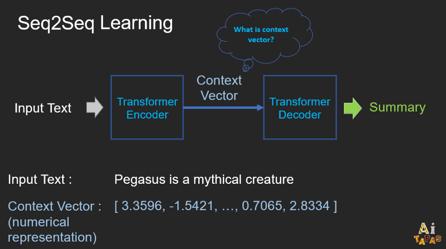
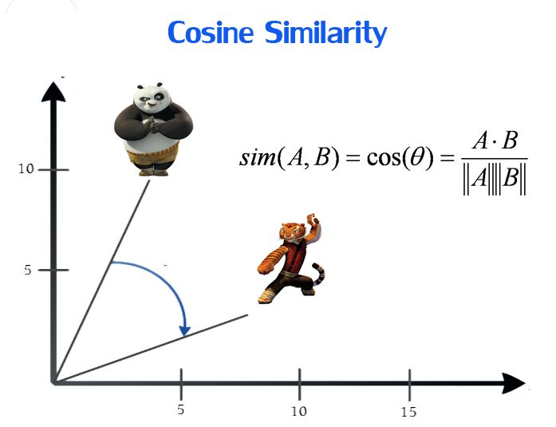

Text Similarity Detection using NLP and Deep Learning
Introduction
In this report, I have explained the implementation of the code and methods that I have used to find similarity between the texts in the two columns in an unsupervised manner.
Summary
The dataset provided includes Unique Id, and the two columns of texts. Similarity scores were to be calculated between the texts of columns 1 and 2. Since the labels for the texts were not provided. I opted for unsupervised way to get the results. I only had experience with simple NLTK workings like bag of words and data preprocessing before. This created a new challenge for me. So, I had to start from scratch. Right from implementing word2vec to transformers. The most accurate method that I found is Transformers which is very recent technology. Word2vec and Tf-idf don’t provide similar level of accuracy when it comes to using large text data. Before implementing Transformers, I went through all the theory and working of Transformers and how it changed the way things worked before. Here I used Sentence Transformers-BERT sentence embeddings using Siamese BERT Network.
Working of BERT
The recent release of BERT is one of the most pioneering innovations in the field of NLP, which is considered a way ahead of all other traditional NLP models. BERT stands for Bidirectional Encoder Representations from Transformers and is a language representation model by Google. It uses two steps, pre-training and fine-tuning, to create state-of-the-art models for a wide range of tasks. BERT is a stacked Transformer’s Encoder model.
What are Transformers in NLP?
The Transformer in NLP is a novel architecture that aims to solve sequence-to-sequence tasks while handling long-range dependencies with ease. It relies entirely on self-attention to compute representations of its input and output WITHOUT using sequence-aligned RNNs or convolution.
Working of Siamese BERT Network:

As the paragraph size was crossing the 510 token limit (512 - after starting and ending tokens are added) of typical Transformer BERT architecture. I tried to explore various things which could be used in order to reduce the text size without actually changing the meaning of the texts. Data cleaning was my first thought.
For this, I used Gensim library to do some preprocessing. Gensim library doesn’t remove any stop words or perform stemming, lemmetization. So, I had to implement it separately. Firstly, I normalized the text, then performed stemming along with stop words elimination. But I couldn’t get the size which was under the limit even after performing the steps.
I came across Longformer and Reformer which was a recent technique to implement Neural Networks on long texts when I had implemented this project. I couldn’t find any documentation available for implementing text similarity using Longformer or Reformer technique at that time. Also, the training time would have increased drastically upon using Longformer.
The other option was to truncate some amount of text. But truncating the texts up to 510 words was not optimal in this case as each paragraph had more than 3000 words. One more option I came across is to split each paragraph up to the limit then take average of the embeddings which were received in vector format then find the cosine similarity between the texts with our final average vector. This method would have taken more time than expected.
After researching, I came across Text abstraction. This method is better than other methods I came across previously which also provides data preprocessing facilities. Implemented the Pegasus text abstraction method to summarize each paragraph in text1 and text2.
Working of Pegasus Text Abstraction:
On a high level, PEGASUS uses an encoder-decoder model for sequence-to-sequence learning. In such a model, the encoder will first take into consideration the context of the whole input text and encode the input text into something called context vector, which is basically a numerical representation of the input text. This numerical representation will then be fed to the decoder whose job is decode the context vector to produce the summary. 
Luckily with this method I was able to reduce the document size within the token limit. The problem that I faced while implementing Text Abstraction was the time and memory constraint. To apply Abstraction on every text in the dataset which was more than 4000 rows surely took more time than expected. As there was no availability of GPU in my machine so had to run this in batches of 500 rows for each iteration on Google Colab which provided limited GPU access and runtime constraints. Used Siamese BERT Network which is a neural network which takes 2 different texts in tandem to give output of 2 vectors. Each vector the result of embeddings created.
Cosine Similarity:
I used cosine similarity method to get the difference between the vectors. 
But Why Cosine Similarity?
Cosine similarity is a metric used to determine how similar the documents are irrespective of their size.Mathematically, it measures the cosine of the angle between two vectors projected in a multi-dimensional space. the cosine similarity captures the orientation (the angle) of the documents and not the magnitude. If you want the magnitude, compute the Euclidean distance instead. The cosine similarity is advantageous because even if the two similar documents are far apart by the Euclidean distance because of the size (like, the word ‘cricket’ appeared 50 times in one document and 10 times in another) they could still have a smaller angle between them. Smaller the angle, higher the similarity.
Thankyou for taking your time and reviewing the project.
You will find the source code for the following in my github account. Link to the project - https://github.com/AishwaryaKshirsagar/Text-Similarity-Detecton-using-NLP.git